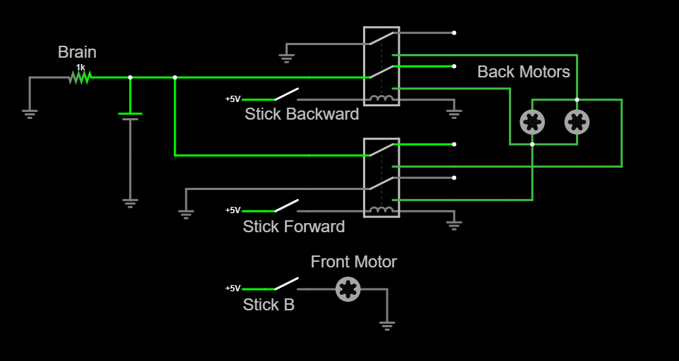

Mike Trike
Description:
An electric powered tricycle.
Goal:
To utilize our newly scrapped Power Wheels cars and practice small scale prototyping.
Prototype:
Prior to the creation of Mike, our instructor had us create a prototype for mike.
From the beginning, we knew our design would be like a regular rear-wheel drive car, but instead of 2 front wheels controlled with a wheel, there would be one wheel attached to handlebars.
We made it a goal for ourselves to use no outside materials, only the things we had in shop, this made the project significantly more difficult.
For our prototype, we had an old VEX cortex brain lying around along with Search & Rescue robotics kits.
A problem we enountered with the VEX cortex brain is that it communicated with it's motors by sending low amperage signals to drivers in the special VEX motors [which we were not using] that control a fixed voltage which actually powers the motor.
Since these signals were only meant to drive the motor and not to power a motor, our solution was to utilize low power relays that act as the drivers in a VEX motor.

To allow for both forward and backward we used 2 of these relays attached to the back motors.
For the front motor, we used a 180 degree servo motor, to drive it we just attached it to a servo driver that came with the fragments of the cortex kit we had lying about. [Cortex]
The wheel for the front shaft was taken out of the Search & Recue kits we had as well. [Search & Rescue]
Regarding control, we used a VEX cortex controller, we programmed the cortex setup with RobotC. [RobotC]
The complete circuit looked like this,

Final Design:
The final design of mike was quite easy in comparison to the prototype, with no digital signals or programming.
This is our final design.
One of our instructor's friends lended us some old broken powerwheels which we used for the back wheels.
For our front wheel, we scrapped an old childrens moped we found and attached it to some PVC and coupled it to the board with some plywood cut into circles.
Other than that the design is extremely straight forwards, we had a pressure switch we found which we used as a pedal to control the back wheels.
For power we had 2 lead-acid batteries wired in series with a switch to select between 1 or 2 batteries going to the back motor.
And we had a fancy key operated switch which we were using to operate the direction of the back motors and to act as a general on/off switch.
All in all, our circuit looked like this,
[the speed selector switch is supposed to be a SPDT switch]
This project took a few months and it was really fun to do, scrapping things and turning them into new stuff is really exciting and we learned a lot.